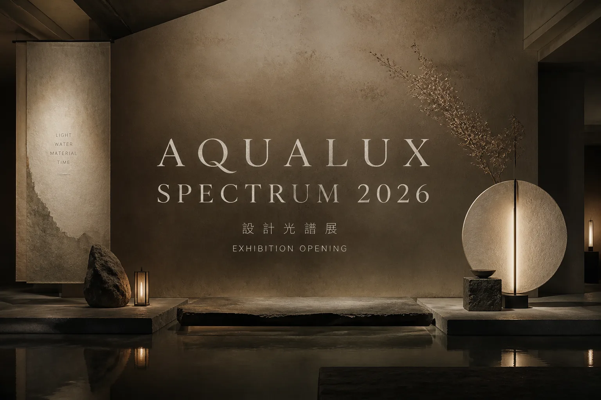
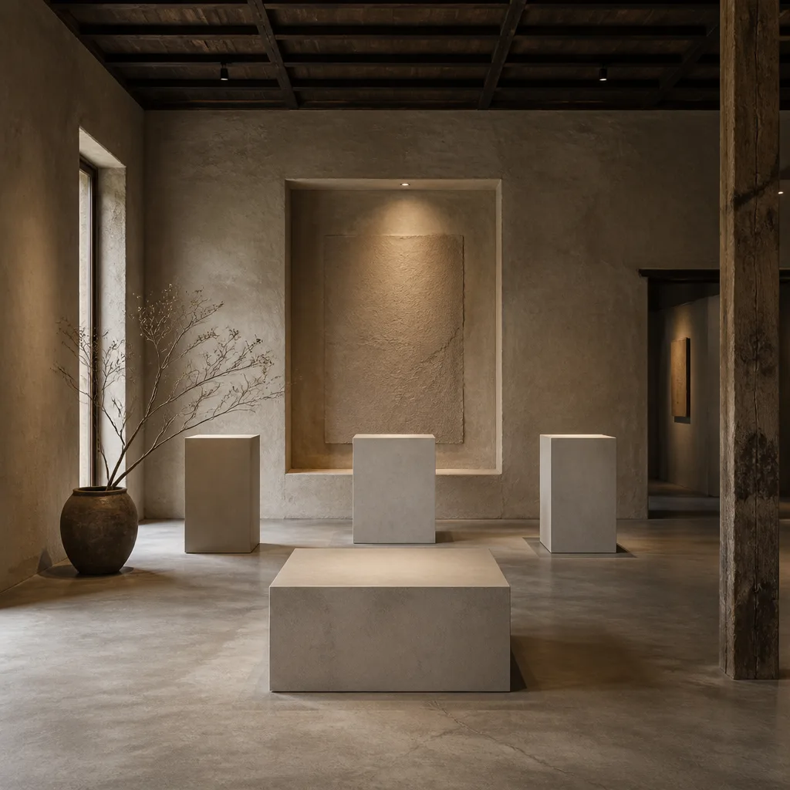
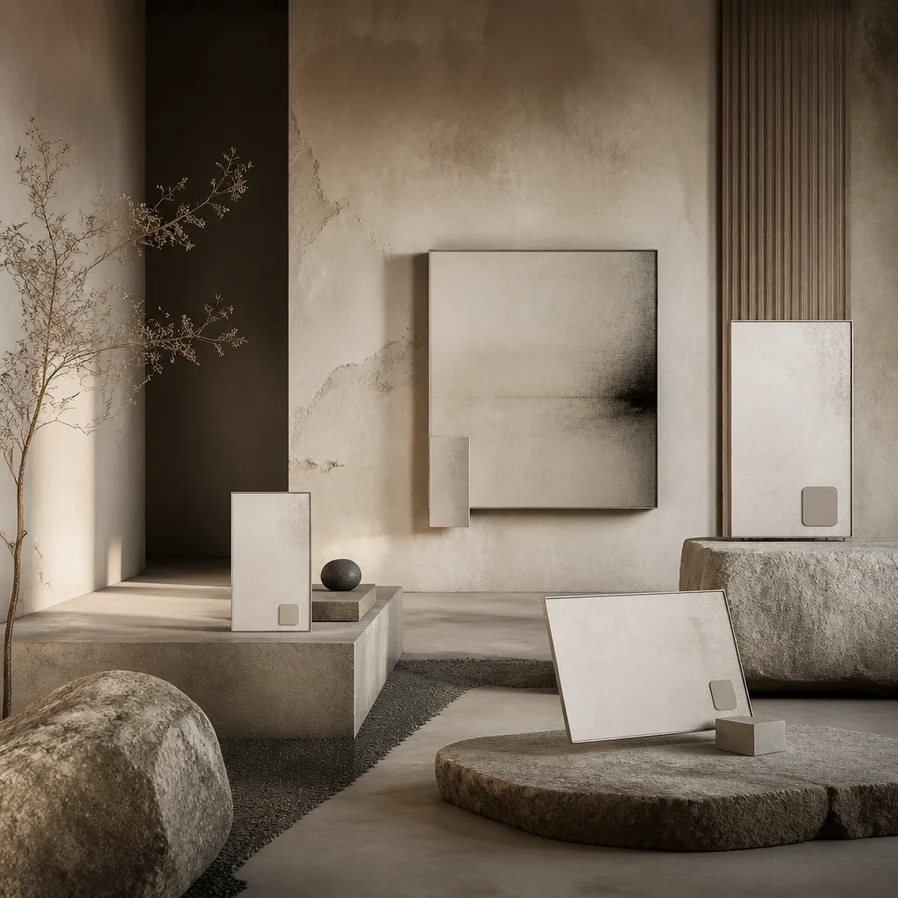
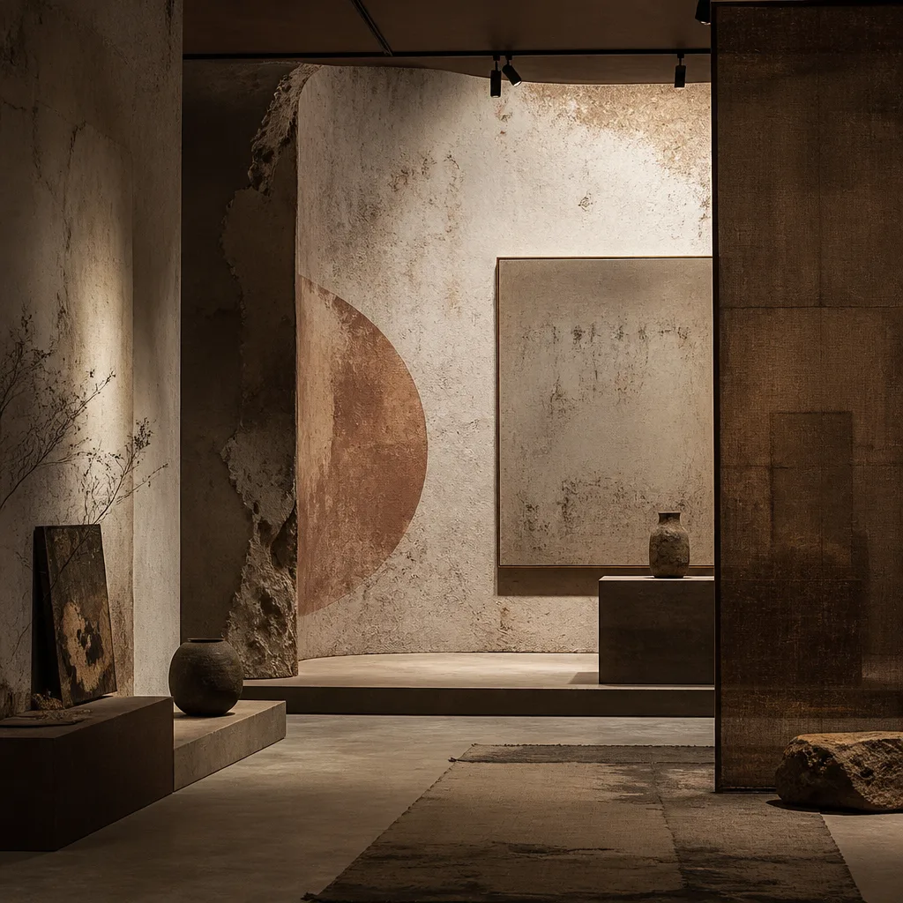
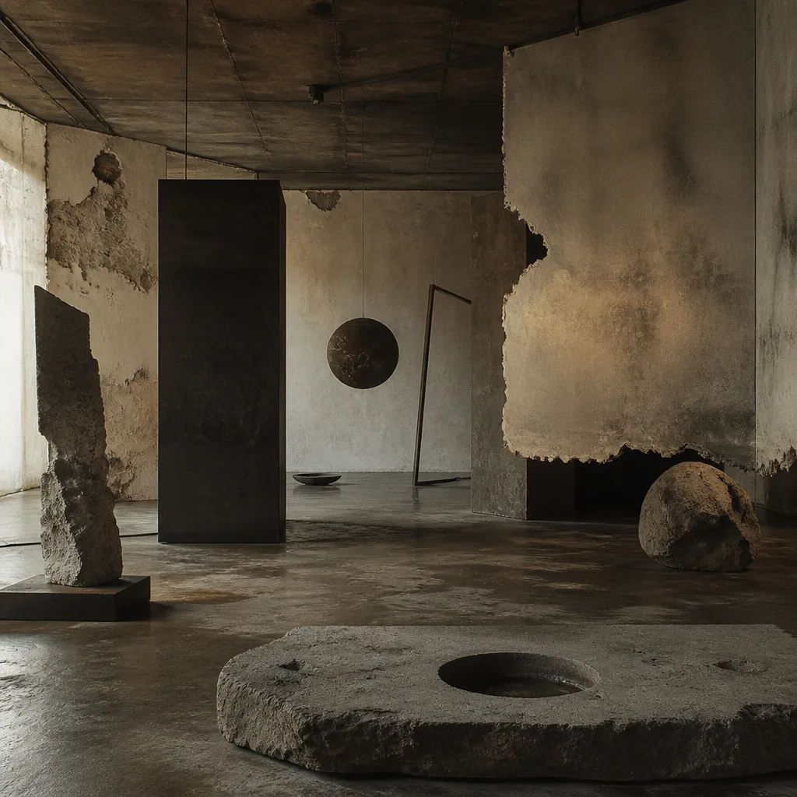
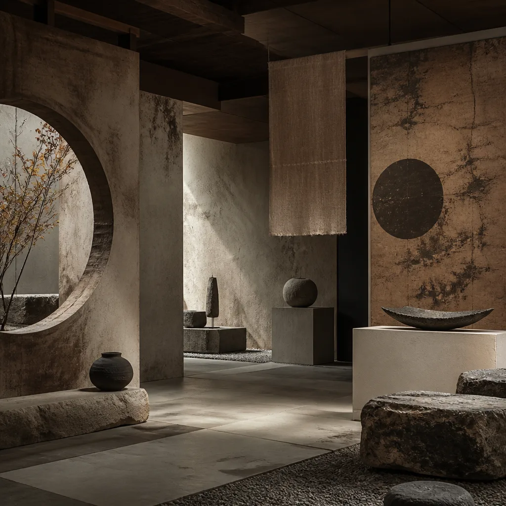
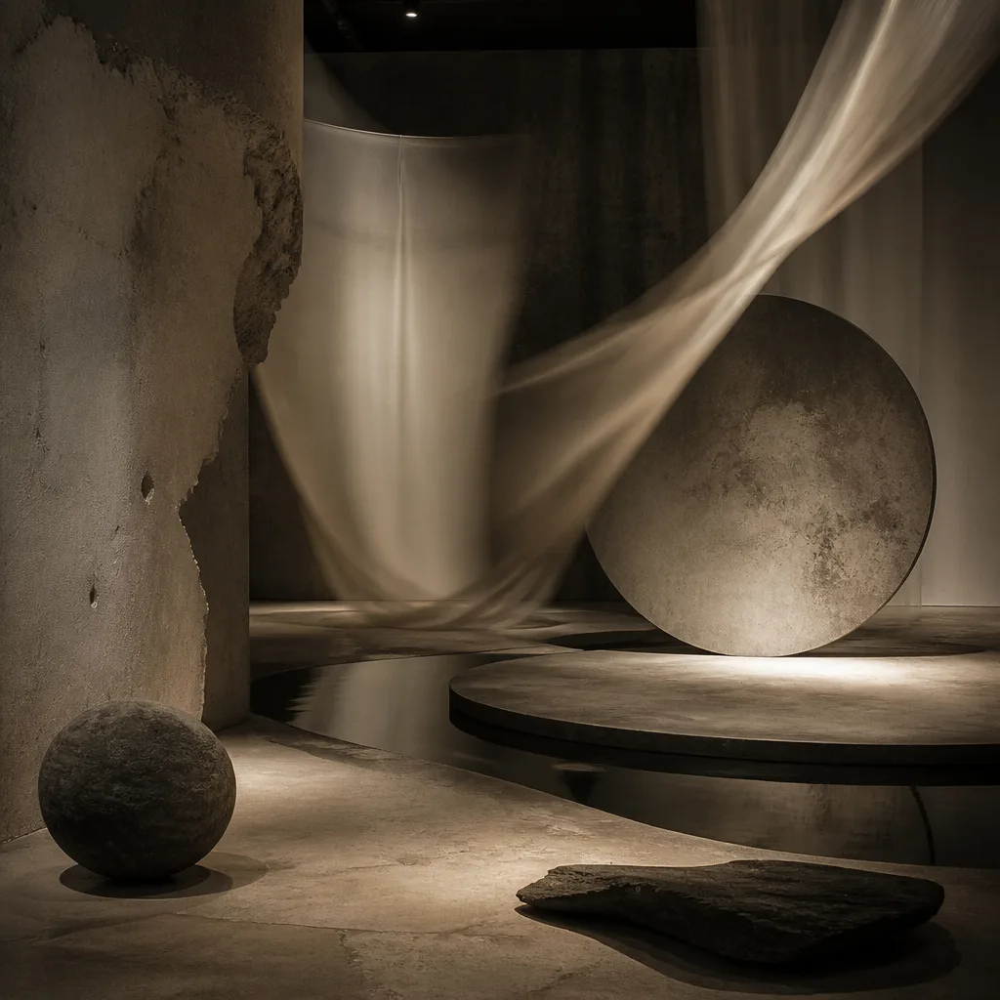

AQUALUX DESIGN SPECTRUM
侘寂の美學
靜謐與無常
在瞬息萬變的設計洪流中，我們尋覓那份樸拙的真誠與歲月的痕跡。aqualux 2026 以「侘寂」為題，邀請您一同感受不完美的平衡與時間的詩意。
策展の思索
策展論述：
靜觀，萬物之本然
在當代設計追求極致完美與瞬時光鮮的浪潮中，「侘寂」為我們提供了一處心靈的棲所。它並非對殘缺的歌頌，而是對事物本然狀態的深刻理解與接納。
aqualux 2026 設計光譜展，以侘寂為核心，引導觀者走入一個時間與材質對話的空間。從一件古樸的陶器，到一塊經風霜洗禮的木材，每一件作品都承載著歲月的記憶與自然的痕跡。
「侘寂，非關完美，而在於那份
不經雕琢的質樸與
幽微深遠的意境。」
展覽旨在透過設計師們對材質的敬畏、工藝的傳承，以及對無常的體悟，呈現一種超越形式的設計哲學。在此，設計不再是冰冷的物件，而是與生命、自然、時間交織的有機存在。
我們邀請您放慢腳步，靜觀作品中那些細微的裂痕、斑駁的色澤，感受其中蘊含的生命力與哲思。這是一場關於「空」與「間」的對話，一次對本質回歸的探索。
匠人一覧
參展設計師：
手作與時光

D_001
ミキ タナカ
Miki Tanaka
陶藝 / 紋理

D_002
ケンジ サトウ
Kenji Sato
木作 / 極簡

D_003
アカリ ハヤシ
Akari Hayashi
紙藝 / 光影

D_004
ヒロシ ナカムラ
Hiroshi Nakamura
墨繪 / 筆觸

D_005
ユミ コバヤシ
Yumi Kobayashi
石材 / 庭園

D_006
ダイキ ヤマモト
Daiki Yamamoto
染織 / 自然

D_007
サクラ イトウ
Sakura Ito
竹編 / 手工

D_008
レン タナカ
Ren Tanaka
金屬 / 鏽蝕

D_009
カイト スズキ
Kaito Suzuki
泥塑 / 形體

D_010
ハナ ヨシダ
Hana Yoshida
玻璃 / 透光

D_011
ハルキ モリ
Haruki Mori
漆器 / 歲月

D_012
ソラ ワタナベ
Sora Watanabe
天然纖維 / 編織
会場の雰囲気
展覽場地：
松菸，靜謐之所

松山文創園區 5 號倉庫，以其樸實的紅磚與開闊的空間，成為承載侘寂美學的理想場域。光影流轉，歲月靜好。
展示ゾーン
五大展區：
光譜的層次

Z01
主流頻譜
Mainstream Frequency
探討在日常設計中，如何融入侘寂的質樸與不完美，讓物件更具生命溫度。
5F-A1 · 5 作品

Z02
時光殘響
Retro Echo
展現時間在材質上留下的痕跡，鏽蝕、斑駁、磨損，皆是歲月的詩意。
5F-A2 · 6 作品

Z03
前衛實驗室
Avant Lab
以實驗性手法，將侘寂哲學轉化為當代藝術與設計的創新語彙。
5F-B1 · 6 作品

Z04
文化光譜
Cultural Spectrum
回溯東方美學根源，呈現侘寂在不同文化脈絡下的演繹與傳承。
5F-B2 · 5 作品

Z05
動態廳
Motion Hall
透過互動裝置與影像，詮釋侘寂中「流動」與「變化」的無常之美。
5F-C1 · 15 作品
講演スケジュール
講座排程：
靜心，聆聽
| 時間 | 主題 | 講者 | 地點 |
|---|---|---|---|
| 12.07 (日) 14:00 | 侘寂：不完美的藝術 | Miki Tanaka | 動態廳 |
| 12.09 (二) 19:00 | 木與光：極簡設計的對話 | Kenji Sato | Z01 主流頻譜 |
| 12.12 (五) 14:00 | 和紙：纖維的詩意 | Akari Hayashi | Z04 文化光譜 |
| 12.14 (日) 16:00 | 墨色：筆觸的禪意 | Hiroshi Nakamura | 動態廳 |
| 12.18 (四) 19:00 | 器物：時間的刻痕 | Kaito Suzuki | Z02 時光殘響 |
チケット情報
票務資訊：
入靜，體驗

AQUALUX 2026 TICKET
「靜觀」入場券
這張入場券本身，便是對侘寂美學的一次實踐。以厚實手抄紙製成，邊緣帶有自然毛邊，墨色筆觸勾勒展覽主題，邀請您從觸感開始，感受不完美的純粹與歲月的痕跡。
SINGLE PASS
單日入場
NT$ 480
每日 / 每人
- ▸ 展覽區單日入場
- ▸ 講座區自由入座
- ▸ 紀念品區 95 折
FULL ACCESS
全展期通票
NT$ 1,280
全展期 / 每人
- ▸ 展覽區無限次入場
- ▸ 講座區優先入座
- ▸ 紀念品區 9 折
- ▸ 獨家電子導覽手冊
CURATOR PASS
策展人專屬
NT$ 2,880
全展期 / 每人
- ▸ 全展期無限次入場
- ▸ 策展人導覽一次
- ▸ 獨家手作體驗工作坊
- ▸ 紀念品區 85 折